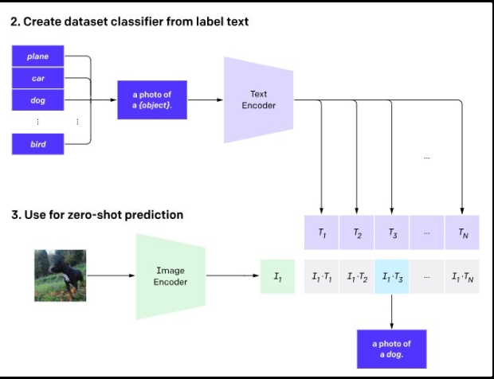

Learning Transferable Visual Models From Natural Language Supervision (CLIP): A Deep Dive
Arushi Kumar, 220150032
Motivation
When OpenAI released CLIP (Contrastive Language-Image Pre-training) in 2021, it represented a fundamental shift in how we approach computer vision problems. Rather than training models on curated labeled datasets like ImageNet, CLIP demonstrated the power of learning from natural language supervision at scale.
I chose to analyze this paper because of its impact on multimodal learning and its approach to solving a core challenge in machine learning: the transferability of models across diverse tasks without task-specific fine-tuning. It laid the foundation for developing many other multimodal systems.
Also CLIP’s zero-shot capabilities: The ability to perform well on previously unseen tasks without any additional training data. This approach not only scales more efficiently but also makes AI systems more adaptable and aligned with human intentions through natural language.
Additionally, CLIP’s architecture serves as a foundational element for many subsequent advancements in multimodal AI, including DALL-E, Stable Diffusion,CLAP, Meta’s ImageBind(which learns a joint embedding across six modalities – images, text, audio, depth, thermal, and IMU data) and other models. Understanding CLIP is crucial for comprehending the current landscape of multimodal learning and generative AI.
Historical Context and Connection to Multimodal Learning
Scalable pre-training methods that learn directly from web-scale text collections have revolutionized NLP, enabling models like GPT-3 to perform zero-shot transfer across diverse tasks. CLIP extends this paradigm to computer vision, challenging the standard practice of relying on crowd-labeled datasets like ImageNet by learning visual representations directly from natural language supervision on web-scale data
The Evolution of Visual Representation Learning
Traditional Supervised Learning (pre-2015): Models like AlexNet, VGG, and ResNet were trained on manually labeled datasets like ImageNet, requiring extensive human annotation and limiting models to fixed categories.
Self-Supervised Learning (2015-2020): Approaches like contrastive learning (SimCLR), masked image modeling, and rotation prediction attempted to learn representations without explicit labels, but still required task-specific fine-tuning for downstream tasks.
Weakly-Supervised Learning: Methods like those used in BiT (Big Transfer) leveraged larger but noisier labeled datasets (JFT-300M) to improve transfer learning capabilities.
Early Explorations of Language-Vision Connections
The idea of using language to supervise visual learning wasn’t entirely new when CLIP emerged:
In 1999, Mori et al. explored improving image retrieval by training models to predict nouns and adjectives in paired text documents.
Quattoni et al. (2007) demonstrated learning more data-efficient image representations by using text in captions.
Joulin et al. (2016) showed that CNNs trained to predict words in image captions could learn useful representations.
Visual N-Grams (Li et al., 2017) used text supervision and demonstrated limited zero-shot capabilities.
However, these earlier approaches achieved limited success and couldn’t match the performance of supervised learning on standard benchmarks. For instance, Li et al. (2017) reached only 11.5% accuracy on ImageNet in a zero-shot setting.
The emergence of transformer-based models in NLP (BERT, GPT) showed the power of pre-training on large-scale text corpora. This inspired approaches to adapt similar techniques to computer vision and multimodal tasks:
ViLBERT, LXMERT, and other vision-language models (2019-2020) combined transformers for both modalities but required fine-tuning for downstream tasks.
VirTex, ICMLM, and ConVIRT (2020) explored transformer-based language modeling and contrastive objectives for learning image representations.
CLIP’s Innovations
CLIP built upon these foundations but made several crucial innovations:
Scale: Training on 400 million image-text pairs, dwarfing previous approaches.
Simplicity: Using a straightforward contrastive learning objective rather than complex architectures or objectives.
Zero-Shot Design: Explicitly optimizing for zero-shot transfer rather than treating it as a secondary capability.
Natural Language Interface: Creating a flexible way to specify visual concepts through language prompts.
CLIP Model: Approach and Training?
What is CLIP?
CLIP is a joint image and text embedding model trained using 400 million image and text pairs in a self supervised way. This means that it maps both text and images to the same embedding space. So, for example, an image of a dog and the sentence “an image of a dog” would end up having very similar embeddings and be close to each other in the vector space. Thus it learns visual concepts from natural language supervision. Unlike traditional vision models that are trained on fixed label sets, CLIP learns to connect images and text in a shared embedding space, enabling flexible zero-shot prediction for any visual concept that can be expressed in language. The model consists of two encoders:
An image encoder that maps images to a feature space
A text encoder that maps text descriptions to the same feature space
By mapping both modalities to the same space, CLIP can measure the similarity between any image and any text, allowing it to perform a wide range of tasks without task-specific training data. ### Natural Language Supervision and Dataset Used CLIP learns from image captions and text descriptions rather than specific labels like “dog” or “cat.” This lets it learn from millions of images on the internet without needing people to manually label each one. The researchers created a new dataset called WebImageText (WIT) with 400 million image-text pairs from the internet. To ensure variety, they searched for images with text related to 500,000 different topics and included up to 20,000 examples for each topic.
() Figure: CLIP is much more efficient at zero-shot transfer than image caption baselines. Transformer-based language models learn 3x slower than a baseline which predicts a bag-of-words encoding of text. Swapping to the contrastive objective used in CLIP further improves efficiency by 4x.
Contrastive Learning
Contrastive learning is a technique used in machine learning, particularly in the field of unsupervised learning. Contrastive learning is a method where we teach an AI model to recognize similarities and differences of a large number of data points.
We have a main item (the “anchor sample”), a similar item (“positive”), and a different item (“negative sample”). The goal is to make the model understand that the anchor and the positive item are alike, so it brings them closer together in its mind while recognizing that the negative item is different and pushing it away. A similar or “positive” image or might be from the same category (e.g., dogs) as the main image or a modified version of it, whereas a “negative” image would be entirely different, typically from another category (e.g., cats).
image.png
CLIP employs contrastive learning to align images with their corresponding text descriptions. The key aspects of this approach include:
Training objective: Given a batch of N (image, text) pairs, CLIP learns to identify which of the N² possible (image, text) pairings actually occurred.
Similarity maximization: For real pairs, CLIP maximizes the cosine similarity between image and text embeddings.
Negative sample contrast: Simultaneously, CLIP minimizes similarity between non-matching pairs (all other N²-N combinations).
Symmetric loss function: CLIP uses a symmetric cross-entropy loss that treats both image-to-text and text-to-image prediction equally.
Pseudocode is as follows
'''# image_encoder - ResNet or Vision Transformer# text_encoder - CBOW or Text Transformer# I[n, h, w, c] - minibatch of aligned images# T[n, l] - minibatch of aligned texts# W_i[d_i, d_e] - learned proj of image to embed# W_t[d_t, d_e] - learned proj of text to embed# t - learned temperature parameter# extract feature representations of each modalityI_f = image_encoder(I) #[n, d_i]T_f = text_encoder(T) #[n, d_t]# joint multimodal embedding [n, d_e]I_e = l2_normalize(np.dot(I_f, W_i), axis=1)T_e = l2_normalize(np.dot(T_f, W_t), axis=1)# scaled pairwise cosine similarities [n, n]logits = np.dot(I_e, T_e.T) * np.exp(t)# symmetric loss functionlabels = np.arange(n)loss_i = cross_entropy_loss(logits, labels, axis=0)loss_t = cross_entropy_loss(logits, labels, axis=1)loss = (loss_i + loss_t)/2'''
'\n# image_encoder - ResNet or Vision Transformer\n# text_encoder - CBOW or Text Transformer\n# I[n, h, w, c] - minibatch of aligned images\n# T[n, l] - minibatch of aligned texts\n# W_i[d_i, d_e] - learned proj of image to embed\n# W_t[d_t, d_e] - learned proj of text to embed\n# t - learned temperature parameter\n# extract feature representations of each modality\nI_f = image_encoder(I) #[n, d_i]\nT_f = text_encoder(T) #[n, d_t]\n# joint multimodal embedding [n, d_e]\nI_e = l2_normalize(np.dot(I_f, W_i), axis=1)\nT_e = l2_normalize(np.dot(T_f, W_t), axis=1)\n# scaled pairwise cosine similarities [n, n]\nlogits = np.dot(I_e, T_e.T) * np.exp(t)\n# symmetric loss function\nlabels = np.arange(n)\nloss_i = cross_entropy_loss(logits, labels, axis=0)\nloss_t = cross_entropy_loss(logits, labels, axis=1)\nloss = (loss_i + loss_t)/2\n'
Architecture of CLIP
ClIP uses two separate architectures as the backbone for encoding vision and text datasets:
image_encoder: Represents the neural network architecture (e.g., ResNet or Vision Transformer) responsible for encoding images.
text_encoder: Represents the neural network architecture (e.g., CBOW, BERT, or Text Transformer) responsible for encoding textual information.
Shared Embedding Space: The two encoders produce embeddings in a shared vector space. These shared embedding spaces allow CLIP to compare text and image representations and learn their underlying relationships.
The original CLIP model was trained from scratch without initializing the image encoder and the text encoder with pre-trained weights due to the large volume of the dataset (400 million image-text pairs) that they used to train their CLIP model.
Training Architecture
first step : Contrastive Pre-training
CLIP is pre-trained on a large-scale dataset of 400 million (image, text data) pairs collected from the internet. During pre-training, the model is presented with pairs of images and text captions.Thus shared latent space embeddings are created.
second step :Create Dataset Classifiers from Label Text
For each image, multiple text descriptions are created, including the correct one and several incorrect ones. This creates a mix of positive samples (matching) and negative sample (mismatched) pairs. These descriptions are fed into the text encoder, generating class-specific embeddings. And then, Contrastive Loss Function is used
third step: Zero shot Classification
Now, the trained text encoder is used as a zero-shot classifier. With a new image, CLIP can make zero-shot predictions. This is done by passing it through the image encoder and the dataset classifier without fine-tuning. 
CLIP Applications
Integration of NLP and image processing tasks:
example tasks include - Generating text descriptions for images,Classify images based on textual descriptions, Edit images based on textual prompts.
Content Moderation
CLIP can be used to moderate content on online platforms by analyzing images and accompanying text to identify and filter out inappropriate or harmful content.
Basis for other Models :
Concept of CLIP, along with its techniques, extends beyond images and text to embrace other modalities. Netflix, in thisblog post, trained a model by combining video and text modalities in the common embedding space to enhance search within video applications. Contrastive Language-Audio Pretraining (CLAP) is another model that integrates text and audio modalities within the same embedding space, making it valuable for improving search functionalities within audio applications.
Key Learnings from CLIP
1. The Power of Natural Language Supervision
CLIP demonstrates that natural language can serve as a rich, flexible form of supervision for visual models. The advantages include:
Scalability: Leveraging existing image-text pairs from the internet without requiring manual labels.
Task-Agnosticity: Supporting a wide range of downstream tasks without specialized architectures.
2. Contrastive Learning as an Efficient Pre-training Strategy
The paper provides evidence that contrastive learning between image and text embeddings is more computationally efficient than alternative approaches:
4x more efficient than bag-of-words prediction.
12x more efficient than transformer-based language modeling.
This efficiency allowed CLIP to scale to hundreds of millions of training examples with available compute resources.
3. Zero-Shot Transfer as a Primary Capability
Rather than treating zero-shot transfer as a secondary capability, CLIP is explicitly designed to excel at it:
The contrastive pre-training can be viewed as optimizing performance on a proxy computer vision dataset with 32,768 randomly created classes defined via natural language.
Zero-shot classifiers are created by embedding class names or descriptions in the same space as images.
This approach as per the paper achieves impressive results across diverse tasks including OCR, action recognition, geo-localization, and many types of fine-grained classification.
4. The Role of Prompt Engineering
The paper introduces the concept of “prompt engineering” for vision models - crafting text templates that help specify the context for classification:
Using templates like “A photo of a {label}” instead of just the label text improves performance.
Context-specific prompts (e.g., “A photo of a {label}, a type of pet” for pet classification) further boost accuracy.
Ensembling across multiple prompts provides additional gains (5% improvement on ImageNet).
This connection to similar techniques in language models like GPT-3 highlights the convergence of language and vision paradigms.
5. Robustness to Distribution Shift
One of the most striking findings is that zero-shot CLIP models are significantly more robust to distribution shifts than traditional supervised models:
The gap between performance on ImageNet and on various distribution-shifted datasets (ImageNetV2, ImageNet Sketch, etc.) is reduced by up to 75%.
This suggests that task-agnostic pre-training may inherently lead to more robust visual representations.
Advantages of CLIP over Traditional Vision Models
Deeper Understanding of Images
While traditional vision models can identify objects in images, CLIP goes further by understanding relationships and context. It can not only recognize a child in a park but also infer activities and emotions like “playing” or “having fun.”
Improved Data Efficiency
Traditional vision models require massive labeled datasets that are expensive and time-consuming to create. CLIP learns from natural language descriptions paired with images, reducing the need for manual labeling and making it more efficient for specialized domains with limited data.
Better Generalization and Interpretability
CLIP’s training on diverse image-text pairs helps it generalize to new scenarios without specific training. Its connection to language also improves explainability - instead of just classifying an image, it can express its understanding through text, making its reasoning more transparent to users.
Exploring CLIP: Defining a Custom CLIP Model
We define a custom clip model and train it on flickr30 dataset
Given the compute and training resource required we use pre trained resnet
!pip install datasets
Requirement already satisfied: datasets in /usr/local/lib/python3.11/dist-packages (3.5.0)
Requirement already satisfied: filelock in /usr/local/lib/python3.11/dist-packages (from datasets) (3.18.0)
Requirement already satisfied: numpy>=1.17 in /usr/local/lib/python3.11/dist-packages (from datasets) (1.26.4)
Requirement already satisfied: pyarrow>=15.0.0 in /usr/local/lib/python3.11/dist-packages (from datasets) (19.0.1)
Requirement already satisfied: dill<0.3.9,>=0.3.0 in /usr/local/lib/python3.11/dist-packages (from datasets) (0.3.8)
Requirement already satisfied: pandas in /usr/local/lib/python3.11/dist-packages (from datasets) (2.2.3)
Requirement already satisfied: requests>=2.32.2 in /usr/local/lib/python3.11/dist-packages (from datasets) (2.32.3)
Requirement already satisfied: tqdm>=4.66.3 in /usr/local/lib/python3.11/dist-packages (from datasets) (4.67.1)
Requirement already satisfied: xxhash in /usr/local/lib/python3.11/dist-packages (from datasets) (3.5.0)
Requirement already satisfied: multiprocess<0.70.17 in /usr/local/lib/python3.11/dist-packages (from datasets) (0.70.16)
Requirement already satisfied: fsspec<=2024.12.0,>=2023.1.0 in /usr/local/lib/python3.11/dist-packages (from fsspec[http]<=2024.12.0,>=2023.1.0->datasets) (2024.12.0)
Requirement already satisfied: aiohttp in /usr/local/lib/python3.11/dist-packages (from datasets) (3.11.16)
Requirement already satisfied: huggingface-hub>=0.24.0 in /usr/local/lib/python3.11/dist-packages (from datasets) (0.30.2)
Requirement already satisfied: packaging in /usr/local/lib/python3.11/dist-packages (from datasets) (24.2)
Requirement already satisfied: pyyaml>=5.1 in /usr/local/lib/python3.11/dist-packages (from datasets) (6.0.2)
Requirement already satisfied: aiohappyeyeballs>=2.3.0 in /usr/local/lib/python3.11/dist-packages (from aiohttp->datasets) (2.6.1)
Requirement already satisfied: aiosignal>=1.1.2 in /usr/local/lib/python3.11/dist-packages (from aiohttp->datasets) (1.3.2)
Requirement already satisfied: attrs>=17.3.0 in /usr/local/lib/python3.11/dist-packages (from aiohttp->datasets) (25.3.0)
Requirement already satisfied: frozenlist>=1.1.1 in /usr/local/lib/python3.11/dist-packages (from aiohttp->datasets) (1.5.0)
Requirement already satisfied: multidict<7.0,>=4.5 in /usr/local/lib/python3.11/dist-packages (from aiohttp->datasets) (6.2.0)
Requirement already satisfied: propcache>=0.2.0 in /usr/local/lib/python3.11/dist-packages (from aiohttp->datasets) (0.3.1)
Requirement already satisfied: yarl<2.0,>=1.17.0 in /usr/local/lib/python3.11/dist-packages (from aiohttp->datasets) (1.19.0)
Requirement already satisfied: typing-extensions>=3.7.4.3 in /usr/local/lib/python3.11/dist-packages (from huggingface-hub>=0.24.0->datasets) (4.13.1)
Requirement already satisfied: mkl_fft in /usr/local/lib/python3.11/dist-packages (from numpy>=1.17->datasets) (1.3.8)
Requirement already satisfied: mkl_random in /usr/local/lib/python3.11/dist-packages (from numpy>=1.17->datasets) (1.2.4)
Requirement already satisfied: mkl_umath in /usr/local/lib/python3.11/dist-packages (from numpy>=1.17->datasets) (0.1.1)
Requirement already satisfied: mkl in /usr/local/lib/python3.11/dist-packages (from numpy>=1.17->datasets) (2025.1.0)
Requirement already satisfied: tbb4py in /usr/local/lib/python3.11/dist-packages (from numpy>=1.17->datasets) (2022.1.0)
Requirement already satisfied: mkl-service in /usr/local/lib/python3.11/dist-packages (from numpy>=1.17->datasets) (2.4.1)
Requirement already satisfied: charset-normalizer<4,>=2 in /usr/local/lib/python3.11/dist-packages (from requests>=2.32.2->datasets) (3.4.1)
Requirement already satisfied: idna<4,>=2.5 in /usr/local/lib/python3.11/dist-packages (from requests>=2.32.2->datasets) (3.10)
Requirement already satisfied: urllib3<3,>=1.21.1 in /usr/local/lib/python3.11/dist-packages (from requests>=2.32.2->datasets) (2.3.0)
Requirement already satisfied: certifi>=2017.4.17 in /usr/local/lib/python3.11/dist-packages (from requests>=2.32.2->datasets) (2025.1.31)
Requirement already satisfied: python-dateutil>=2.8.2 in /usr/local/lib/python3.11/dist-packages (from pandas->datasets) (2.9.0.post0)
Requirement already satisfied: pytz>=2020.1 in /usr/local/lib/python3.11/dist-packages (from pandas->datasets) (2025.2)
Requirement already satisfied: tzdata>=2022.7 in /usr/local/lib/python3.11/dist-packages (from pandas->datasets) (2025.2)
Requirement already satisfied: six>=1.5 in /usr/local/lib/python3.11/dist-packages (from python-dateutil>=2.8.2->pandas->datasets) (1.17.0)
Requirement already satisfied: intel-openmp<2026,>=2024 in /usr/local/lib/python3.11/dist-packages (from mkl->numpy>=1.17->datasets) (2024.2.0)
Requirement already satisfied: tbb==2022.* in /usr/local/lib/python3.11/dist-packages (from mkl->numpy>=1.17->datasets) (2022.1.0)
Requirement already satisfied: tcmlib==1.* in /usr/local/lib/python3.11/dist-packages (from tbb==2022.*->mkl->numpy>=1.17->datasets) (1.2.0)
Requirement already satisfied: intel-cmplr-lib-rt in /usr/local/lib/python3.11/dist-packages (from mkl_umath->numpy>=1.17->datasets) (2024.2.0)
Requirement already satisfied: intel-cmplr-lib-ur==2024.2.0 in /usr/local/lib/python3.11/dist-packages (from intel-openmp<2026,>=2024->mkl->numpy>=1.17->datasets) (2024.2.0)
train on flickr30 dataset
here we load dataset and create a dataloader
from torch.utils.data import DataLoaderfrom datasets import load_datasetfrom torchvision import transformsfrom PIL import Imageimport torchfrom torchvision import transformsfrom PIL import Image# Define a custom dataset class for Flickr30kclass Flickr30kDataset(torch.utils.data.Dataset):def__init__(self):self.dataset = load_dataset("nlphuji/flickr30k", cache_dir="./huggingface_data")self.transform = transforms.Compose([ transforms.Resize((224, 224)), transforms.ToTensor(), ])self.cap_per_image =2def__len__(self):returnself.dataset.num_rows["test"] *self.cap_per_imagedef__getitem__(self, idx): original_idx = idx //self.cap_per_image image =self.dataset["test"][original_idx]["image"].convert("RGB") image =self.transform(image) caption =self.dataset["test"][original_idx]["caption"][idx %self.cap_per_image]return {"image": image, "caption": caption}# Create an instance of the custom datasetflickr30k_custom_dataset = Flickr30kDataset()
from dataclasses import dataclass@dataclassclass Config:""" Configuration class for the CLIP training script. """ embed_dim: int=512# Embedding dimension transformer_embed_dim: int=768# Transformer embedding dimension max_len: int=32# Maximum text length text_model: str="distilbert-base-multilingual-cased"# Text model name epochs: int=5# Number of training epochs batch_size: int=128# Batch size
# Create the DataLoaderclip_dataloader = DataLoader(flickr30k_custom_dataset, batch_size=Config.batch_size, shuffle=True, num_workers=4)
import numpy as npimport matplotlib.pyplot as plt# Create an iterator from the dataloaderdata_iter =iter(clip_dataloader)# Get one batchbatch =next(data_iter)image = batch["image"][0] # Assuming batch size is greater than 0caption = batch["caption"][0]# Convert the image tensor to a NumPy array and permute dimensionsimage_np = np.transpose(image.numpy(), (1, 2, 0))# Display the image and captionplt.imshow(image_np)plt.title(f"Caption: {caption}")plt.show()
print("example of a caption in abatch:", batch["caption"][0])print("number of captions in each batch:",len(batch["caption"]))
example of a caption in abatch: A man, trying to hold on, as he competes in a rodeo on horse back.
number of captions in each batch: 128
/usr/local/lib/python3.11/dist-packages/torchvision/models/_utils.py:208: UserWarning: The parameter 'pretrained' is deprecated since 0.13 and may be removed in the future, please use 'weights' instead.
warnings.warn(
/usr/local/lib/python3.11/dist-packages/torchvision/models/_utils.py:223: UserWarning: Arguments other than a weight enum or `None` for 'weights' are deprecated since 0.13 and may be removed in the future. The current behavior is equivalent to passing `weights=ResNet34_Weights.IMAGENET1K_V1`. You can also use `weights=ResNet34_Weights.DEFAULT` to get the most up-to-date weights.
warnings.warn(msg)
Downloading: "https://download.pytorch.org/models/resnet34-b627a593.pth" to /root/.cache/torch/hub/checkpoints/resnet34-b627a593.pth
100%|██████████| 83.3M/83.3M [00:01<00:00, 85.9MB/s]
2025-05-08 13:42:47.955754: E external/local_xla/xla/stream_executor/cuda/cuda_fft.cc:477] Unable to register cuFFT factory: Attempting to register factory for plugin cuFFT when one has already been registered
WARNING: All log messages before absl::InitializeLog() is called are written to STDERR
E0000 00:00:1746711768.127893 193 cuda_dnn.cc:8310] Unable to register cuDNN factory: Attempting to register factory for plugin cuDNN when one has already been registered
E0000 00:00:1746711768.178668 193 cuda_blas.cc:1418] Unable to register cuBLAS factory: Attempting to register factory for plugin cuBLAS when one has already been registered
Xet Storage is enabled for this repo, but the 'hf_xet' package is not installed. Falling back to regular HTTP download. For better performance, install the package with: `pip install huggingface_hub[hf_xet]` or `pip install hf_xet`
We strongly recommend passing in an `attention_mask` since your input_ids may be padded. See https://huggingface.co/docs/transformers/troubleshooting#incorrect-output-when-padding-tokens-arent-masked.
# Create an instance of your modelmodel = CustomModel().to(device)
/usr/local/lib/python3.11/dist-packages/torchvision/models/_utils.py:208: UserWarning: The parameter 'pretrained' is deprecated since 0.13 and may be removed in the future, please use 'weights' instead.
warnings.warn(
/usr/local/lib/python3.11/dist-packages/torchvision/models/_utils.py:223: UserWarning: Arguments other than a weight enum or `None` for 'weights' are deprecated since 0.13 and may be removed in the future. The current behavior is equivalent to passing `weights=ResNet34_Weights.IMAGENET1K_V1`. You can also use `weights=ResNet34_Weights.DEFAULT` to get the most up-to-date weights.
warnings.warn(msg)
start_epoch =0num_epochs =3batch_zero =Truefor epoch inrange(start_epoch, num_epochs): model.train()for batch in clip_dataloader: image = batch["image"].to(device) text = batch["caption"]# images, text = batch loss, img_acc, cap_acc = model(image, text)# Backward pass and optimization optimizer.zero_grad() loss.backward() optimizer.step()if batch_zero:print(f"Epoch [{0}/{num_epochs}], Batch Loss: {loss.item()}") batch_zero =False# Print training statisticsprint(f"Epoch [{epoch+1}/{num_epochs}], Batch Loss: {loss.item()}")print("Training complete.")
huggingface/tokenizers: The current process just got forked, after parallelism has already been used. Disabling parallelism to avoid deadlocks...
To disable this warning, you can either:
- Avoid using `tokenizers` before the fork if possible
- Explicitly set the environment variable TOKENIZERS_PARALLELISM=(true | false)
huggingface/tokenizers: The current process just got forked, after parallelism has already been used. Disabling parallelism to avoid deadlocks...
To disable this warning, you can either:
- Avoid using `tokenizers` before the fork if possible
- Explicitly set the environment variable TOKENIZERS_PARALLELISM=(true | false)
huggingface/tokenizers: The current process just got forked, after parallelism has already been used. Disabling parallelism to avoid deadlocks...
To disable this warning, you can either:
- Avoid using `tokenizers` before the fork if possible
- Explicitly set the environment variable TOKENIZERS_PARALLELISM=(true | false)
huggingface/tokenizers: The current process just got forked, after parallelism has already been used. Disabling parallelism to avoid deadlocks...
To disable this warning, you can either:
- Avoid using `tokenizers` before the fork if possible
- Explicitly set the environment variable TOKENIZERS_PARALLELISM=(true | false)
huggingface/tokenizers: The current process just got forked, after parallelism has already been used. Disabling parallelism to avoid deadlocks...
To disable this warning, you can either:
- Avoid using `tokenizers` before the fork if possible
- Explicitly set the environment variable TOKENIZERS_PARALLELISM=(true | false)
huggingface/tokenizers: The current process just got forked, after parallelism has already been used. Disabling parallelism to avoid deadlocks...
To disable this warning, you can either:
- Avoid using `tokenizers` before the fork if possible
- Explicitly set the environment variable TOKENIZERS_PARALLELISM=(true | false)
huggingface/tokenizers: The current process just got forked, after parallelism has already been used. Disabling parallelism to avoid deadlocks...
To disable this warning, you can either:
- Avoid using `tokenizers` before the fork if possible
- Explicitly set the environment variable TOKENIZERS_PARALLELISM=(true | false)
huggingface/tokenizers: The current process just got forked, after parallelism has already been used. Disabling parallelism to avoid deadlocks...
To disable this warning, you can either:
- Avoid using `tokenizers` before the fork if possible
- Explicitly set the environment variable TOKENIZERS_PARALLELISM=(true | false)
Epoch [2/3], Batch Loss: 3.8700060844421387
huggingface/tokenizers: The current process just got forked, after parallelism has already been used. Disabling parallelism to avoid deadlocks...
To disable this warning, you can either:
- Avoid using `tokenizers` before the fork if possible
- Explicitly set the environment variable TOKENIZERS_PARALLELISM=(true | false)
huggingface/tokenizers: The current process just got forked, after parallelism has already been used. Disabling parallelism to avoid deadlocks...
To disable this warning, you can either:
- Avoid using `tokenizers` before the fork if possible
- Explicitly set the environment variable TOKENIZERS_PARALLELISM=(true | false)
huggingface/tokenizers: The current process just got forked, after parallelism has already been used. Disabling parallelism to avoid deadlocks...
To disable this warning, you can either:
- Avoid using `tokenizers` before the fork if possible
- Explicitly set the environment variable TOKENIZERS_PARALLELISM=(true | false)
huggingface/tokenizers: The current process just got forked, after parallelism has already been used. Disabling parallelism to avoid deadlocks...
To disable this warning, you can either:
- Avoid using `tokenizers` before the fork if possible
- Explicitly set the environment variable TOKENIZERS_PARALLELISM=(true | false)
Epoch [3/3], Batch Loss: 3.8735854625701904
Training complete.
Zero-Shot Image Classification using CLIP
Let’s demonstrate CLIP’s zero-shot classification capabilities with a simple example:
huggingface/tokenizers: The current process just got forked, after parallelism has already been used. Disabling parallelism to avoid deadlocks...
To disable this warning, you can either:
- Avoid using `tokenizers` before the fork if possible
- Explicitly set the environment variable TOKENIZERS_PARALLELISM=(true | false)
Requirement already satisfied: torch in /usr/local/lib/python3.11/dist-packages (2.5.1+cu124)
Requirement already satisfied: torchvision in /usr/local/lib/python3.11/dist-packages (0.20.1+cu124)
Requirement already satisfied: ftfy in /usr/local/lib/python3.11/dist-packages (6.3.1)
Requirement already satisfied: regex in /usr/local/lib/python3.11/dist-packages (2024.11.6)
Requirement already satisfied: tqdm in /usr/local/lib/python3.11/dist-packages (4.67.1)
Requirement already satisfied: pillow in /usr/local/lib/python3.11/dist-packages (11.1.0)
Requirement already satisfied: matplotlib in /usr/local/lib/python3.11/dist-packages (3.7.5)
Requirement already satisfied: filelock in /usr/local/lib/python3.11/dist-packages (from torch) (3.18.0)
Requirement already satisfied: typing-extensions>=4.8.0 in /usr/local/lib/python3.11/dist-packages (from torch) (4.13.1)
Requirement already satisfied: networkx in /usr/local/lib/python3.11/dist-packages (from torch) (3.4.2)
Requirement already satisfied: jinja2 in /usr/local/lib/python3.11/dist-packages (from torch) (3.1.6)
Requirement already satisfied: fsspec in /usr/local/lib/python3.11/dist-packages (from torch) (2024.12.0)
Requirement already satisfied: nvidia-cuda-nvrtc-cu12==12.4.127 in /usr/local/lib/python3.11/dist-packages (from torch) (12.4.127)
Requirement already satisfied: nvidia-cuda-runtime-cu12==12.4.127 in /usr/local/lib/python3.11/dist-packages (from torch) (12.4.127)
Requirement already satisfied: nvidia-cuda-cupti-cu12==12.4.127 in /usr/local/lib/python3.11/dist-packages (from torch) (12.4.127)
Requirement already satisfied: nvidia-cudnn-cu12==9.1.0.70 in /usr/local/lib/python3.11/dist-packages (from torch) (9.1.0.70)
Requirement already satisfied: nvidia-cublas-cu12==12.4.5.8 in /usr/local/lib/python3.11/dist-packages (from torch) (12.4.5.8)
Requirement already satisfied: nvidia-cufft-cu12==11.2.1.3 in /usr/local/lib/python3.11/dist-packages (from torch) (11.2.1.3)
Requirement already satisfied: nvidia-curand-cu12==10.3.5.147 in /usr/local/lib/python3.11/dist-packages (from torch) (10.3.5.147)
Requirement already satisfied: nvidia-cusolver-cu12==11.6.1.9 in /usr/local/lib/python3.11/dist-packages (from torch) (11.6.1.9)
Requirement already satisfied: nvidia-cusparse-cu12==12.3.1.170 in /usr/local/lib/python3.11/dist-packages (from torch) (12.3.1.170)
Requirement already satisfied: nvidia-nccl-cu12==2.21.5 in /usr/local/lib/python3.11/dist-packages (from torch) (2.21.5)
Requirement already satisfied: nvidia-nvtx-cu12==12.4.127 in /usr/local/lib/python3.11/dist-packages (from torch) (12.4.127)
Requirement already satisfied: nvidia-nvjitlink-cu12==12.4.127 in /usr/local/lib/python3.11/dist-packages (from torch) (12.4.127)
Requirement already satisfied: triton==3.1.0 in /usr/local/lib/python3.11/dist-packages (from torch) (3.1.0)
Requirement already satisfied: sympy==1.13.1 in /usr/local/lib/python3.11/dist-packages (from torch) (1.13.1)
Requirement already satisfied: mpmath<1.4,>=1.1.0 in /usr/local/lib/python3.11/dist-packages (from sympy==1.13.1->torch) (1.3.0)
Requirement already satisfied: numpy in /usr/local/lib/python3.11/dist-packages (from torchvision) (1.26.4)
Requirement already satisfied: wcwidth in /usr/local/lib/python3.11/dist-packages (from ftfy) (0.2.13)
Requirement already satisfied: contourpy>=1.0.1 in /usr/local/lib/python3.11/dist-packages (from matplotlib) (1.3.1)
Requirement already satisfied: cycler>=0.10 in /usr/local/lib/python3.11/dist-packages (from matplotlib) (0.12.1)
Requirement already satisfied: fonttools>=4.22.0 in /usr/local/lib/python3.11/dist-packages (from matplotlib) (4.56.0)
Requirement already satisfied: kiwisolver>=1.0.1 in /usr/local/lib/python3.11/dist-packages (from matplotlib) (1.4.8)
Requirement already satisfied: packaging>=20.0 in /usr/local/lib/python3.11/dist-packages (from matplotlib) (24.2)
Requirement already satisfied: pyparsing>=2.3.1 in /usr/local/lib/python3.11/dist-packages (from matplotlib) (3.2.1)
Requirement already satisfied: python-dateutil>=2.7 in /usr/local/lib/python3.11/dist-packages (from matplotlib) (2.9.0.post0)
Requirement already satisfied: mkl_fft in /usr/local/lib/python3.11/dist-packages (from numpy->torchvision) (1.3.8)
Requirement already satisfied: mkl_random in /usr/local/lib/python3.11/dist-packages (from numpy->torchvision) (1.2.4)
Requirement already satisfied: mkl_umath in /usr/local/lib/python3.11/dist-packages (from numpy->torchvision) (0.1.1)
Requirement already satisfied: mkl in /usr/local/lib/python3.11/dist-packages (from numpy->torchvision) (2025.1.0)
Requirement already satisfied: tbb4py in /usr/local/lib/python3.11/dist-packages (from numpy->torchvision) (2022.1.0)
Requirement already satisfied: mkl-service in /usr/local/lib/python3.11/dist-packages (from numpy->torchvision) (2.4.1)
Requirement already satisfied: six>=1.5 in /usr/local/lib/python3.11/dist-packages (from python-dateutil>=2.7->matplotlib) (1.17.0)
Requirement already satisfied: MarkupSafe>=2.0 in /usr/local/lib/python3.11/dist-packages (from jinja2->torch) (3.0.2)
Requirement already satisfied: intel-openmp<2026,>=2024 in /usr/local/lib/python3.11/dist-packages (from mkl->numpy->torchvision) (2024.2.0)
Requirement already satisfied: tbb==2022.* in /usr/local/lib/python3.11/dist-packages (from mkl->numpy->torchvision) (2022.1.0)
Requirement already satisfied: tcmlib==1.* in /usr/local/lib/python3.11/dist-packages (from tbb==2022.*->mkl->numpy->torchvision) (1.2.0)
Requirement already satisfied: intel-cmplr-lib-rt in /usr/local/lib/python3.11/dist-packages (from mkl_umath->numpy->torchvision) (2024.2.0)
Requirement already satisfied: intel-cmplr-lib-ur==2024.2.0 in /usr/local/lib/python3.11/dist-packages (from intel-openmp<2026,>=2024->mkl->numpy->torchvision) (2024.2.0)
Let’s explore CLIP’s embedding space by visualizing the text embeddings for various categories:
from sklearn.manifold import TSNE# Define categories across different domainscategories = {'Animals': ['dog', 'cat', 'bird', 'fish', 'tiger', 'elephant', 'snake', 'bear'],'Vehicles': ['car', 'motorcycle', 'bicycle', 'bus', 'train', 'airplane', 'boat', 'helicopter'],'Food': ['pizza', 'hamburger', 'sushi', 'salad', 'cake', 'ice cream', 'apple', 'banana'],'Clothing': ['shirt', 'pants', 'dress', 'hat', 'shoes', 'jacket', 'sweater', 'socks']}# Flatten the categoriesall_categories = [item for sublist in categories.values() for item in sublist]domain_labels = [domain for domain, items in categories.items() for _ in items]# Apply prompt engineeringprompts = [f"a photo of a {category}"for category in all_categories]text_tokens = clip.tokenize(prompts).to(device)# Get text embeddingswith torch.no_grad(): text_features = model.encode_text(text_tokens) text_features = text_features / text_features.norm(dim=-1, keepdim=True)# Reduce to 2D using t-SNEtsne = TSNE(n_components=2, random_state=42)text_features_2d = tsne.fit_transform(text_features.cpu().numpy())# Create a colormap for domainsdomain_to_color = {'Animals': 'red','Vehicles': 'blue','Food': 'green','Clothing': 'purple'}colors = [domain_to_color[domain] for domain in domain_labels]# Plotplt.figure(figsize=(10, 8))scatter = plt.scatter(text_features_2d[:, 0], text_features_2d[:, 1], c=colors, alpha=0.7)# Add labelsfor i, category inenumerate(all_categories): plt.annotate(category, (text_features_2d[i, 0], text_features_2d[i, 1]))# Add legendlegend_elements = [plt.Line2D([0], [0], marker='o', color='w', markerfacecolor=color, markersize=10, label=domain)for domain, color in domain_to_color.items()]plt.legend(handles=legend_elements)plt.title('t-SNE Visualization of CLIP Text Embeddings')plt.tight_layout()plt.show()
conclusion:
note how in the embedding space, items of similar kind are together. That is all vehicles are together, all food items are together and so on
Exploring Prompt Engineering
Let’s examine the impact of different prompt templates on CLIP’s zero-shot performance:
url ="https://upload.wikimedia.org/wikipedia/commons/thumb/3/3c/Giant_Panda_2004-03-2.jpg/1200px-Giant_Panda_2004-03-2.jpg"image = Image.open(requests.get(url, stream=True).raw)plt.figure(figsize=(6, 6))plt.imshow(image)plt.axis('off')plt.show()image_input = preprocess(image).unsqueeze(0).to(device)animal_classes = ["panda", "bear", "cat", "dog", "tiger"]prompt_templates = ["{}.", # Just the label"a photo of a {}.", # Basic template"a photo of a {}, a type of animal.", # With category context"a close-up photo of a {}.", # With visual context"a {} in the wild."# With environment context]results = np.zeros((len(prompt_templates), len(animal_classes)))for i, template inenumerate(prompt_templates): prompts = [template.format(animal_class) for animal_class in animal_classes] text_tokens = clip.tokenize(prompts).to(device)with torch.no_grad():# Encode the image and text image_features = model.encode_image(image_input) text_features = model.encode_text(text_tokens)# Normalize features image_features /= image_features.norm(dim=-1, keepdim=True) text_features /= text_features.norm(dim=-1, keepdim=True)# Calculate similarity scores similarity =100*(image_features @ text_features.T).softmax(dim=-1) results[i] = similarity[0].cpu().numpy()# Print similarity scores instead of bar chartfor i, template inenumerate(prompt_templates):print(f"\nPrompt template: \"{template}\"")for cls, score inzip(animal_classes, results[i]):print(f" {cls:<10}: {score:.2f}%")
Prompt template: "{}."
panda : 21.48%
bear : 20.67%
cat : 18.78%
dog : 19.44%
tiger : 19.61%
Prompt template: "a photo of a {}."
panda : 21.25%
bear : 20.70%
cat : 19.06%
dog : 19.52%
tiger : 19.47%
Prompt template: "a photo of a {}, a type of animal."
panda : 21.34%
bear : 20.66%
cat : 19.11%
dog : 19.47%
tiger : 19.42%
Prompt template: "a close-up photo of a {}."
panda : 21.17%
bear : 20.75%
cat : 19.11%
dog : 19.56%
tiger : 19.39%
Prompt template: "a {} in the wild."
panda : 21.36%
bear : 20.56%
cat : 19.20%
dog : 19.47%
tiger : 19.41%
conclusion :
CLIP finds Panda and Bear to be closeby in embedding space. Also additional information like in the wild doesnt seem to help CLIP possibly because the image as we see doesnt have “wild” or forest in background
Examining Robustness to Distribution Shift
Let’s visualize CLIP’s robustness to distribution shift by comparing its performance on different image styles:
# Define image URLs for different styles of the same objectimage_urls = {"Photo": "https://upload.wikimedia.org/wikipedia/commons/thumb/e/e3/Oranges_-_whole-halved-segment.jpg/1200px-Oranges_-_whole-halved-segment.jpg","Sketch": "https://i.ytimg.com/vi/5eOh2gFcXcQ/maxresdefault.jpg","Painting": "https://i.ytimg.com/vi/GJ0NlhSyG8A/maxresdefault.jpg","Cartoon": "https://www.shutterstock.com/image-vector/bright-vector-set-colorful-slice-260nw-604042622.jpg"}fruit_classes = ["orange", "apple", "banana", "strawberry", "pear"]prompt_template ="a photo of a {}, a type of fruit."text_inputs = torch.cat([clip.tokenize(prompt_template.format(c)) for c in fruit_classes]).to(device)with torch.no_grad(): text_features = model.encode_text(text_inputs) text_features /= text_features.norm(dim=-1, keepdim=True)fig, axes = plt.subplots(2, 2, figsize=(12, 10))axes = axes.flatten()results = {}for i, (style, url) inenumerate(image_urls.items()):# Load and display image image = Image.open(requests.get(url, stream=True).raw) axes[i].imshow(image) axes[i].set_title(f"Style: {style}") axes[i].axis('off') image_input = preprocess(image).unsqueeze(0).to(device)with torch.no_grad(): image_features = model.encode_image(image_input) image_features /= image_features.norm(dim=-1, keepdim=True)# Calculate similarity similarity =100.0* (image_features @ text_features.T).softmax(dim=-1) results[style] = similarity[0].cpu().numpy() prediction = fruit_classes[similarity[0].argmax().item()] confidence = similarity[0].max().item() axes[i].text(10, 30, f"Prediction: {prediction}\nConfidence: {confidence:.1f}%", bbox=dict(facecolor='white', alpha=0.7))# Print confidence scores for all fruit classesfor style, scores in results.items():print(f"\nConfidence scores for style: {style}")for fruit, score inzip(fruit_classes, scores):print(f" {fruit:<10}: {score:.2f}%")plt.tight_layout()plt.show()
Confidence scores for style: Photo
orange : 21.52%
apple : 19.88%
banana : 19.39%
strawberry: 19.64%
pear : 19.58%
Confidence scores for style: Sketch
orange : 20.16%
apple : 20.22%
banana : 19.34%
strawberry: 19.86%
pear : 20.44%
Confidence scores for style: Painting
orange : 21.09%
apple : 20.08%
banana : 19.44%
strawberry: 19.70%
pear : 19.67%
Confidence scores for style: Cartoon
orange : 21.23%
apple : 19.89%
banana : 19.53%
strawberry: 19.62%
pear : 19.72%
conclusion:
CLIP is able to work on images from different distribtuions ( like sketches/ photo/painting etc). For sketches we see it wrongly predicts pear instead
calculating distance between text embedding and image embedding
# Load an imageurl ="https://cdn.shopify.com/s/files/1/0086/0795/7054/files/Golden-Retriever.jpg?v=1645179525"response = requests.get(url)image = Image.open(BytesIO(response.content))# Display the imageplt.figure(figsize=(6, 6))plt.imshow(image)plt.axis('off')plt.show()image_input = preprocess(image).unsqueeze(0).to(device)# Define classes to classify againstclasses = ["a photo of a cat", "a photo of a dog", "a photo of a car", "a photo of a house"]text_inputs = torch.cat([clip.tokenize(c) for c in classes]).to(device)# Calculate featureswith torch.no_grad(): image_features = model.encode_image(image_input) text_features = model.encode_text(text_inputs)# Normalize featuresimage_features /= image_features.norm(dim=-1, keepdim=True)text_features /= text_features.norm(dim=-1, keepdim=True)# Calculate similaritysimilarity = (100.0* image_features @ text_features.T).softmax(dim=-1)values, indices = similarity[0].topk(len(classes))# Print resultsfor value, index inzip(values, indices):print(f"{classes[index]:>16s}: {100* value.item():.2f}%")
a photo of a dog: 99.85%
a photo of a cat: 0.15%
a photo of a house: 0.01%
a photo of a car: 0.00%
using CLIP to retrieve image from database guven a text prompt
import osfrom tqdm import tqdm# Function to encode images from a folderdef encode_image_folder(folder_path): encoded_images = [] image_paths = []for filename in tqdm(os.listdir(folder_path)):if filename.lower().endswith(('.png', '.jpg', '.jpeg')):try: image_path = os.path.join(folder_path, filename) image = preprocess(Image.open(image_path)).unsqueeze(0).to(device)with torch.no_grad(): image_features = model.encode_image(image) image_features /= image_features.norm(dim=-1, keepdim=True) encoded_images.append(image_features.cpu().numpy()) image_paths.append(image_path)exceptExceptionas e:print(f"Error processing {filename}: {e}")return np.vstack(encoded_images), image_paths# Search images by text querydef search_images(text_query, encoded_images, image_paths, top_k=5):with torch.no_grad(): text_input = clip.tokenize([text_query]).to(device) text_features = model.encode_text(text_input) text_features /= text_features.norm(dim=-1, keepdim=True)# Calculate similarities similarities = (100.0* torch.from_numpy(encoded_images) @ text_features.T.cpu()).numpy()# Get top matches best_image_idx = np.argsort(similarities.flatten())[::-1][:top_k]return [(image_paths[idx], similarities[idx][0]) for idx in best_image_idx]# Demo the image searchencoded_images, image_paths = encode_image_folder("/kaggle/input/image-folder/folder_with_images")queries = ["a sunset over mountains", "a dog playing in the park", "food on a plate"]plt.figure(figsize=(15, 5*len(queries)))for i, query inenumerate(queries): results = search_images(query, encoded_images, image_paths)for j, (image_path, score) inenumerate(results): plt.subplot(len(queries), 5, i *5+ j +1) plt.imshow(Image.open(image_path)) plt.axis('off') plt.title(f"Score: {score:.2f}") plt.figtext(0.1, 0.9- i *0.3, f"Query: '{query}'", fontsize=14)plt.tight_layout()plt.savefig("image_search_results.png")plt.show()
an implemented project of mine (earlier course project) that finetunes a CLIP Model trained on Medical data ( PubMedCLIP) on image scan dataset
Reflections
What Surprised Me
Efficiency of Contrastive Learning: The paper’s demonstration that contrastive learning is 4x more efficient than bag-of-words prediction and 12x more efficient than transformer language modeling was eye-opening. This efficiency gap explains why previous approaches with similar ideas but different training objectives couldn’t scale effectively.
Robustness to Distribution Shift: One of the most surprising findings was that zero-shot CLIP models significantly outperform supervised models in terms of robustness to distribution shifts as per the paper. This suggests that the typical approach of optimizing for a specific dataset might inherently lead to models that overfit to dataset-specific patterns rather than learning generalizable visual concepts.
Prompt Engineering’s Impact: The significant performance improvements achieved through simple prompt engineering techniques (up to 5% on ImageNet) demonstrate how crucial the interface between the model and the task specification is. As the paper quotes - “Another issue we encountered is that it’s relatively rare in our pre-training dataset for the text paired with the image to be just a single word. Usually the text is a full sentence describing the image in some way. To help bridge this distribution gap, we found that using the prompt template “A photo of a label.” tobeagooddefault that helps specify the text is about the content of the image. This often improves performance over the baseline of using only the label text.”
Dataset Influence Over Architecture: The paper suggests that the dataset’s scale and quality had a much larger impact on performance than architectural choices. This challenges the common research focus on architecture design and suggests allocating more resources to data curation and scaling.
Scope for Improvement
Computational Efficiency: Despite being more efficient than alternatives, CLIP still requires enormous computational resources. The paper estimates that a 1000x increase in compute would be needed for zero-shot CLIP to match state-of-the-art supervised models on all tasks. Developing more compute-efficient training methods would make this approach more accessible.
Few-Shot Performance: While CLIP excels at zero-shot tasks, the transition to few-shot learning is somewhat counterintuitive. Adding just a few examples sometimes decreases performance relative to zero-shot predictions. Developing methods that better integrate prior knowledge (from zero-shot) with example-based learning could yield significant improvements.
Handling Abstract and Systematic Tasks: CLIP struggles with abstract and systematic tasks like counting objects in an image. This suggests limitations in how well natural language supervision captures certain visual reasoning capabilities. Combining CLIP’s approach with methods specifically designed for reasoning tasks might address this gap.
Data Diversity and Bias: The web-scale training data inevitably contains biases present in internet text and images. While the paper acknowledges these issues, there’s significant room for improvement in developing methods to identify and mitigate these biases during training or inference.
Integration with Video Understanding: While CLIP shows strong performance on action recognition from single frames, extending its capabilities to understand temporal dynamics in videos would be a valuable improvement. This might involve adapting the contrastive learning objective to include temporal information.
Explainability: Like many deep learning models, CLIP’s decision-making process lacks transparency. Developing methods to explain CLIP’s predictions would increase trust and enable more effective human-AI collaboration. Recent work on feature visualization and attribution methods for multimodal models represents a promising direction for making CLIP’s decisions more interpretable.
References
Primary Paper
Radford, A., Kim, J. W., Hallacy, C., Ramesh, A., Goh, G., Agarwal, S., Sastry, G., Askell, A., Mishkin, P., Clark, J., Krueger, G., & Sutskever, I. (2021). Learning Transferable Visual Models From Natural Language Supervision. arXiv preprint arXiv:2103.00020.

 CLIP is pre-trained on a large-scale dataset of 400 million (image, text data) pairs collected from the internet. During pre-training, the model is presented with pairs of images and text captions.Thus shared latent space embeddings are created.
CLIP is pre-trained on a large-scale dataset of 400 million (image, text data) pairs collected from the internet. During pre-training, the model is presented with pairs of images and text captions.Thus shared latent space embeddings are created.